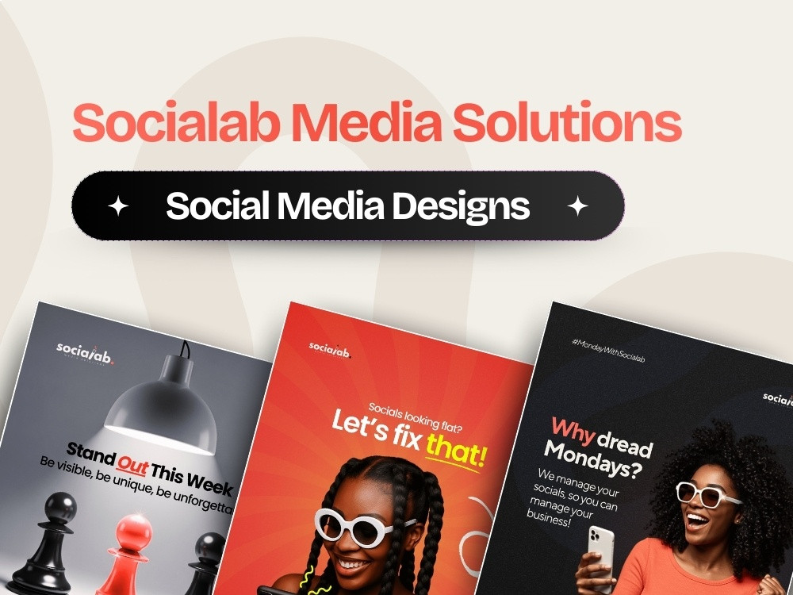
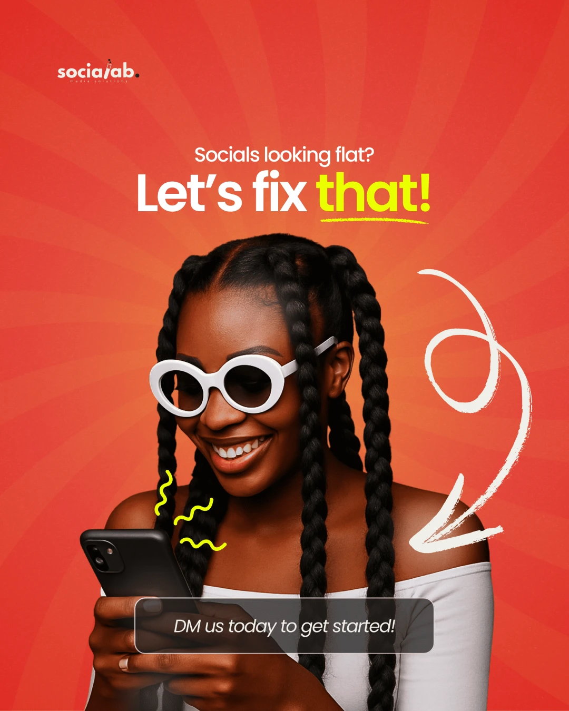
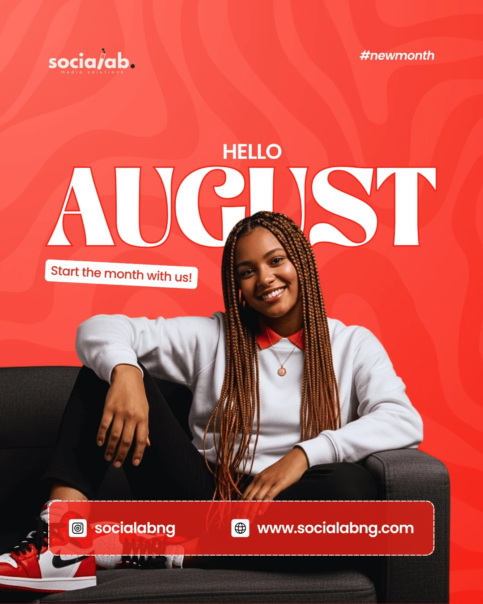
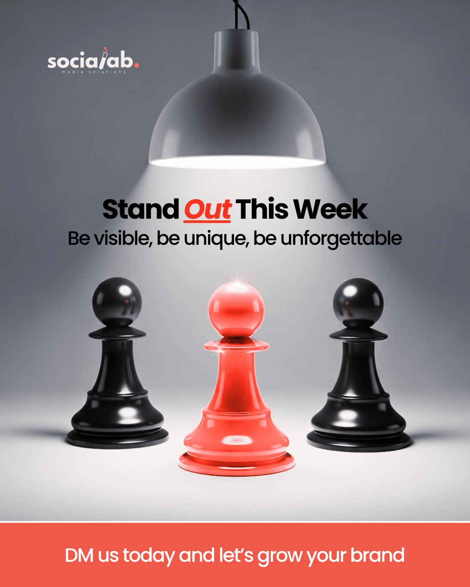
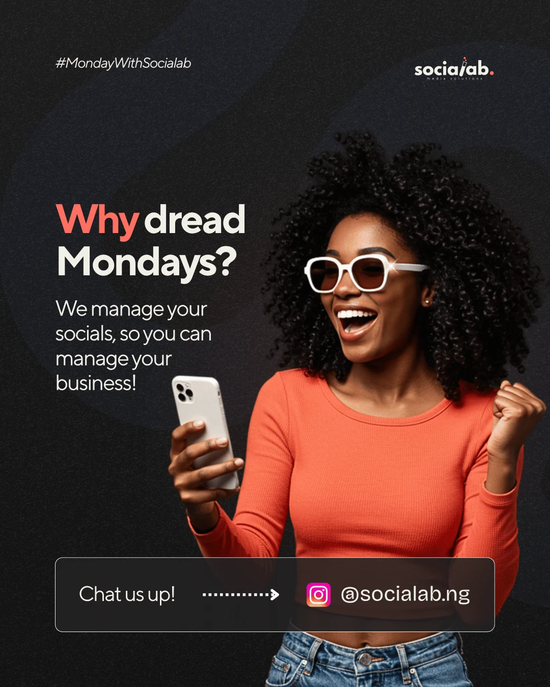
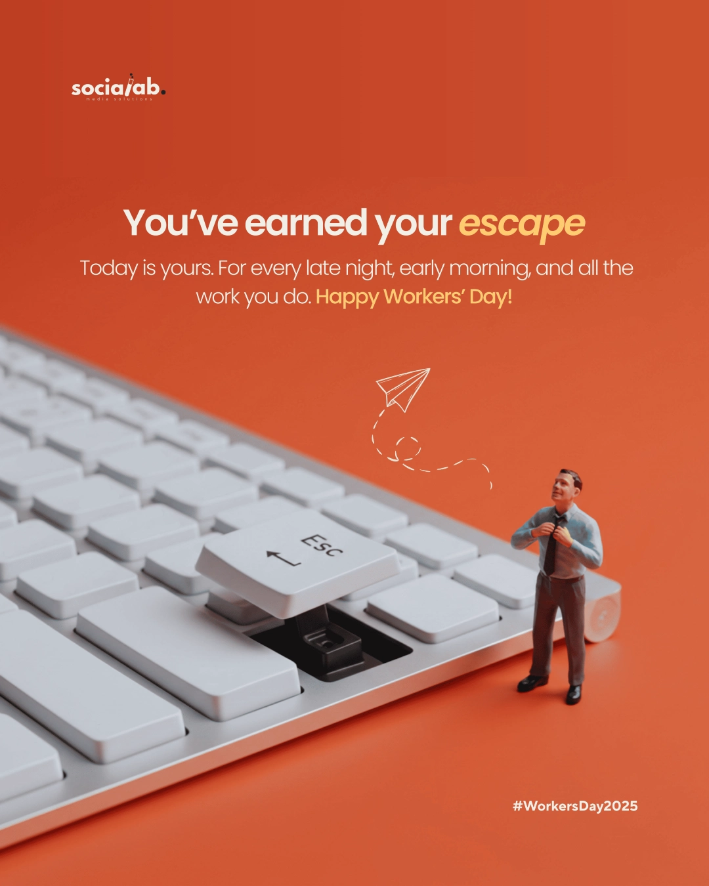
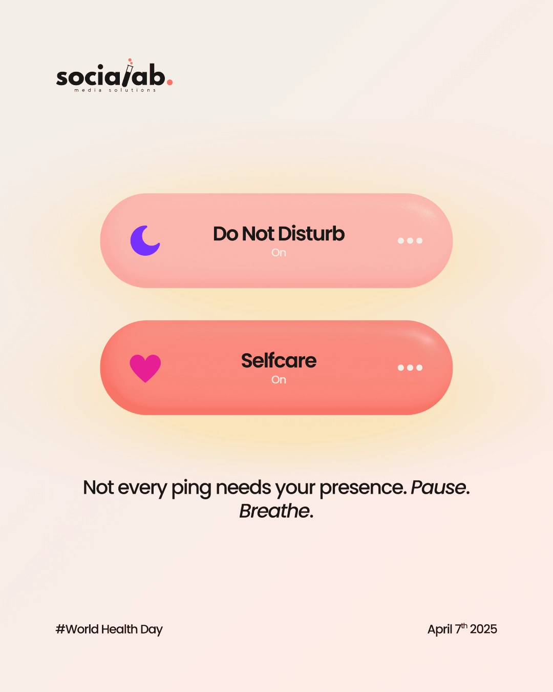

Socials
SociaLab
Social media designs made for SociaLab Media Solutions, a digital marketing agency, for their own page.

(01) — The brief
The Brief
SociaLab needed content for their own page, not for their clients. As a digital marketing agency, their feed had to double as proof of what they do, so each post came with its own separate brief rather than one set of rules covering the whole batch, some promoting their services, some just showing up for the calendar.
That meant working across a real mix: service promos, monthly greetings, motivational posts, an educational piece, and a couple of observance days, all while keeping it recognizably SociaLab from one post to the next.
(02) — The work
The Work

Socials Looking Flat? Let's Fix That!

Hello August

Stand Out This Week

Why Dread Mondays
Learn Real Digital Skills From Scratch

Workers Day

World Health Day
Swipe →
(03) — What I learned
What I Learned
Designing for an agency's own page is a bit of a double brief, every post has to work as content and as a quiet demo of the agency's own design standards. That raised the bar on consistency, since the same feed carries a service promo, a calendar greeting, and a public holiday post, and all of it still has to look like it came from one place.
Getting a fresh brief for each post also meant switching gears often, from something educational to something purely celebratory, without losing the thread that ties SociaLab's page together.